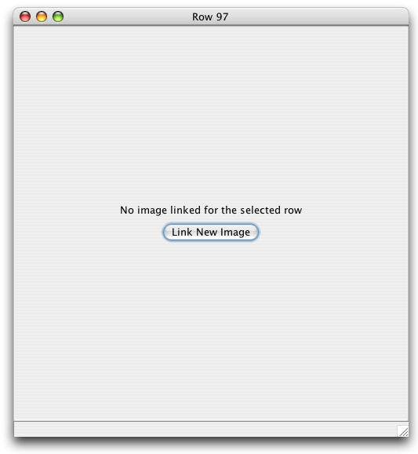

The Image Window displays linked images and provides additional functionality for working with the images.
It is important to understand that the WorkBench does not relocate or store image files within Data Sets. The WorkBench creates a link to the image location. The WorkBench does create a smaller version, or thumbnail, of the image, but it is not a replacement for the original image. The original image should never be deleted or moved. The WorkBench displays the thumbnail image in the Image Window by default but the original image can be displayed by using the Image Menu.
The WorkBench can only link a single image to each record.
Note: Images may not exceed 16 MB.
The image window is toggled on and off by clicking the  (Image Window) button in the Workspace Item Bar. When an image window is toggled 'on' an 'Image' column appears in the Data Set, which includes an
(Image Window) button in the Workspace Item Bar. When an image window is toggled 'on' an 'Image' column appears in the Data Set, which includes an  (image) icon for those records that are linked to an image.
(image) icon for those records that are linked to an image.
The Image Window will open on the side of the WorkBench window that allows the most space on the screen. The Image Window may overlap the WorkBench window if the screen does not allow enough space for both to exist side-by-side. The Image Window default setting is 'always on top'. This can be changed in the Image Menu.
The Image Toggle button can also be used to link a single image to a record.
All the above also goes for the 'Show Map of selected Rows' window except for the stuff about being able to change AlwaysOnTop.
First select a record, then click the  (Image Window) button to activate the Image Window.
(Image Window) button to activate the Image Window.

Image Window
Click on 'Link New Image'.
A file dialog will appear:

Image File Dialog
Choose an image file to link and click 'Open'.
The image will display in the Image Window.
To link a new image to a new record simply click on the new record. The 'Link New Image' button will display in the Image Window.
Note: Do not select the Image Window button to link another image, it will close the Image Window as well as the Image column.
More image controls are available in the Image Menus.
On a Macintosh the Image Window Menus appear on the menu bar.
The following image displays the items for each Image Menu:

Image Menus
The Menu items are defined in the following table:
| Close | Closes the Image Window. |
| Reduced Size | Displays the Image thumbnail. |
| Original Size | Displays the original image in full resolution. |
| Keep Window on Top | Keeps the Image Window displayed on top of the WorkBench. |
| Delete Link | Unlinks the image from the record. |
| Replace Image | Opens a dialog to choose a new image to link to the record. |
| Image Window | Opens the Image Window section of the WorkBench Help. |